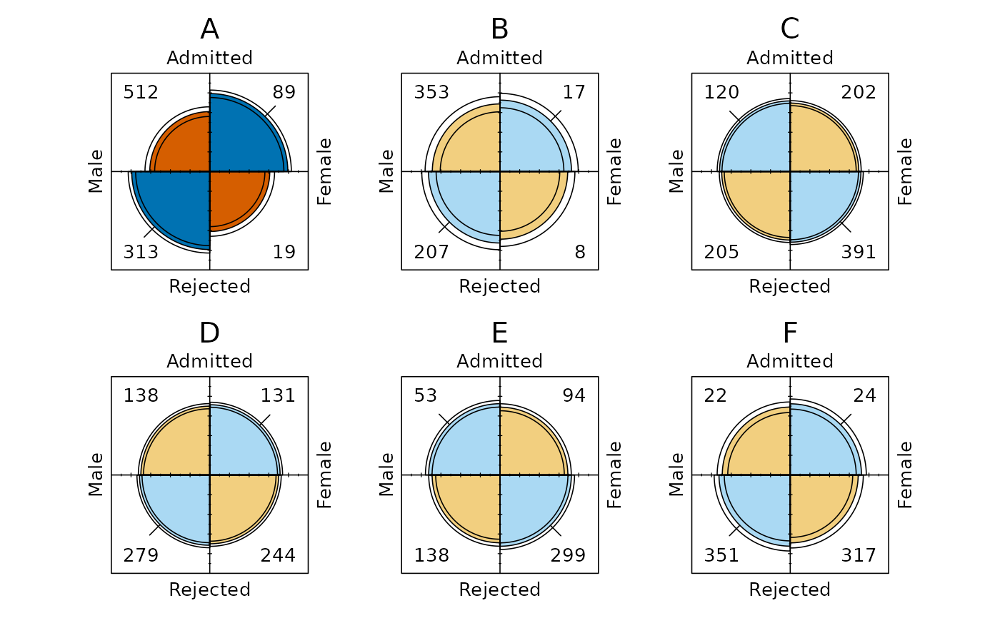

fourfold_palette() returns six colors for the palette argument of
geom_fourfold(). The colors encode the direction and statistical
strength of association and are drawn directly by the geom rather than
through a fill scale.
Entries 1-2 are used when extended = FALSE (or conf_level = 0),
entries 3-4 are used for a stratum whose association is not
significant after adjustment, and entries 5-6 are used for a stratum whose
association is significant after adjustment. Within each pair, the first
color fills the diagonal with fewer cases than expected under independence
and the second fills the diagonal with more.
Usage
fourfold_palette(palette = c("vcd", "okabe-ito"))Details
"vcd", the default, gives the colors of vcd::fourfold() (Meyer et
al., 2026): light and darker blue, then light red and light blue, then red
and navy.
"okabe-ito" uses the colors of Okabe and Ito (2008), chosen to remain
distinguishable for readers with common forms of color-vision deficiency:
sky blue and blue, then orange and sky blue lightened about halfway to
white, then vermillion and blue.
References
Meyer, D., Zeileis, A., Hornik, K., & Friendly, M. (2026). vcd: Visualizing Categorical Data (R package). doi:10.32614/CRAN.package.vcd
Okabe, M., & Ito, K. (2008). Color Universal Design (CUD): How to make figures and presentations that are friendly to colorblind people. https://jfly.uni-koeln.de/color/
Examples
fourfold_palette()
#> [1] "#99CCFF" "#6699CC" "#FFA0A0" "#A0A0FF" "#FF0000" "#000080"
fourfold_palette("okabe-ito")
#> [1] "#56B4E9" "#0072B2" "#F2CF7F" "#AAD9F3" "#D55E00" "#0072B2"
ucb <- as.data.frame(UCBAdmissions)
ggplot2::ggplot(
ucb,
ggplot2::aes(x = Gender, y = Admit, weight = Freq)
) +
geom_fourfold(palette = fourfold_palette("okabe-ito")) +
ggplot2::facet_wrap(ggplot2::vars(Dept), ncol = 3) +
theme_fourfold()
